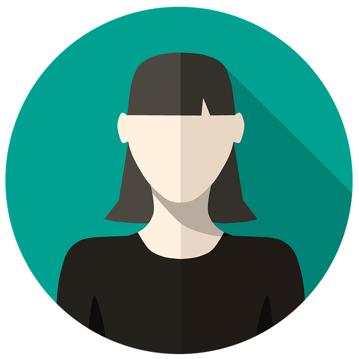

Hello
A Bit About Me
I am Asma from Sri Lanka. If you ask me what interests me, I would say reading and cooking. But, since my childhood I have an attachment towards plants and nature. I am looking forward to start my career in front end development. Currently I am a student of Hack Your Future. So for the time being , wish ME good luck and YOU, Stay Safe ..!!